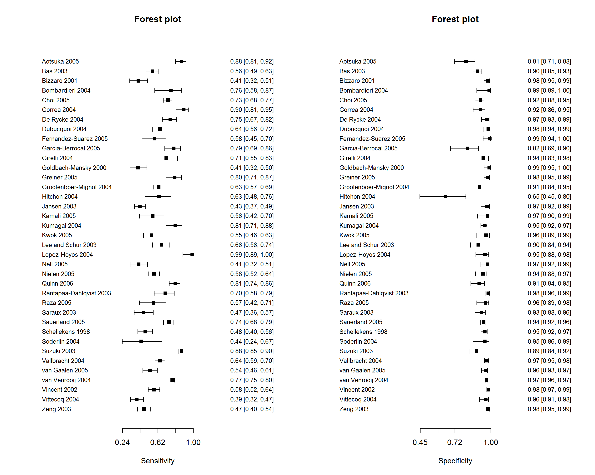
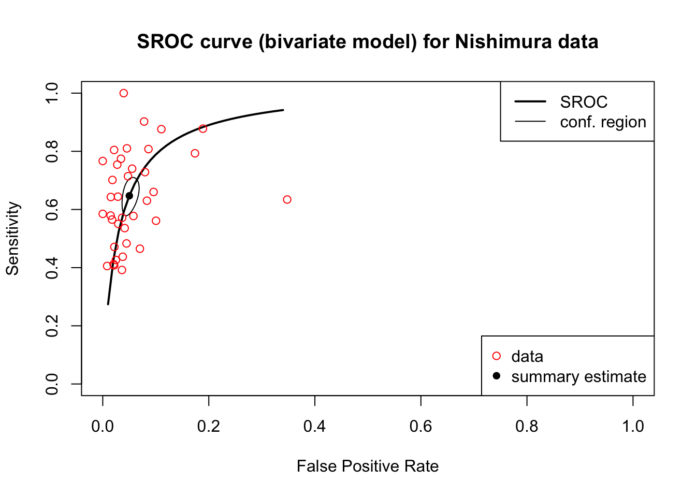

Exercise 1 - Nishiumra
Then we read in the csv file without setting the working directory, you can refer to this chapter 1.1. Table 3.1 is the first 5 rows of Nishiumra data.
# Read data
nishimura <- read.csv("~/Desktop/meta/Diagnostic Test/Nishimura-2007.csv")
print(nishimura)| test | study_id | ccpgeneration | TP | FP | FN | TN | sens | spec | id |
|---|---|---|---|---|---|---|---|---|---|
| Anti-CCP | Aotsuka 2005 | CCP2 | 115 | 17 | 16 | 73 | 0.878 | 0.811 | 1 |
| Anti-CCP | Bas 2003 | CCP1 | 110 | 24 | 86 | 215 | 0.561 | 0.900 | 2 |
| Anti-CCP | Bizzaro 2001 | CCP1 | 40 | 5 | 58 | 227 | 0.408 | 0.978 | 3 |
| Anti-CCP | Bombardieri 2004 | CCP2 | 23 | 0 | 7 | 39 | 0.767 | 1.000 | 4 |
| Anti-CCP | Choi 2005 | CCP2 | 236 | 20 | 88 | 231 | 0.728 | 0.920 | 5 |
1a. Univariate Analysis
First of all, use the madad command to conduct a meta analysis by using univariate model, and save the results in the object “madad.nishimura.”
## Descriptive summary of nishimura with 37 primary studies.
## Confidence level for all calculations set to 95 %
## Using a continuity correction of 0.5 if applicable
##
## Diagnostic accuracies
## sens 2.5% 97.5% spec 2.5% 97.5%
## [1,] 0.875 0.808 0.921 0.808 0.715 0.876
## [2,] 0.561 0.491 0.628 0.898 0.853 0.930
## [3,] 0.409 0.317 0.508 0.976 0.948 0.989
## [4,] 0.758 0.585 0.875 0.988 0.891 0.999
## [5,] 0.728 0.677 0.773 0.919 0.878 0.946
## [6,] 0.898 0.814 0.946 0.919 0.862 0.954
## [7,] 0.752 0.667 0.821 0.969 0.927 0.987
## [8,] 0.642 0.560 0.716 0.981 0.941 0.994
## [9,] 0.583 0.451 0.705 0.993 0.940 0.999
## [10,] 0.790 0.693 0.862 0.819 0.687 0.904
## [11,] 0.708 0.546 0.831 0.942 0.829 0.982
## [12,] 0.407 0.318 0.501 0.988 0.948 0.997
## [13,] 0.801 0.706 0.871 0.976 0.948 0.990
## [14,] 0.630 0.570 0.685 0.912 0.839 0.954
## [15,] 0.631 0.480 0.760 0.646 0.447 0.804
## [16,] 0.427 0.368 0.488 0.971 0.924 0.989
## [17,] 0.564 0.423 0.695 0.974 0.895 0.994
## [18,] 0.806 0.706 0.878 0.953 0.923 0.972
## [19,] 0.550 0.464 0.633 0.964 0.890 0.989
## [20,] 0.659 0.563 0.743 0.901 0.842 0.940
## [21,] 0.987 0.888 0.999 0.955 0.883 0.983
## [22,] 0.413 0.322 0.509 0.975 0.922 0.992
## [23,] 0.577 0.516 0.636 0.939 0.881 0.969
## [24,] 0.806 0.743 0.857 0.910 0.845 0.950
## [25,] 0.699 0.581 0.795 0.980 0.961 0.990
## [26,] 0.570 0.422 0.706 0.958 0.891 0.984
## [27,] 0.466 0.364 0.570 0.927 0.876 0.958
## [28,] 0.739 0.679 0.791 0.944 0.919 0.961
## [29,] 0.483 0.405 0.563 0.954 0.924 0.972
## [30,] 0.441 0.239 0.665 0.954 0.862 0.986
## [31,] 0.875 0.845 0.900 0.888 0.838 0.924
## [32,] 0.644 0.587 0.696 0.970 0.949 0.983
## [33,] 0.536 0.457 0.613 0.957 0.929 0.975
## [34,] 0.774 0.749 0.798 0.965 0.957 0.972
## [35,] 0.579 0.516 0.639 0.984 0.968 0.992
## [36,] 0.393 0.324 0.466 0.960 0.914 0.982
## [37,] 0.471 0.402 0.542 0.977 0.954 0.988
##
## Test for equality of sensitivities:
## X-squared = 632, df = 36, p-value = <2e-16
## Test for equality of specificities:
## X-squared = 235, df = 36, p-value = <2e-16
##
##
## Diagnostic OR and likelihood ratios
## DOR 2.5% 97.5% posLR 2.5% 97.5% negLR 2.5% 97.5%
## [1,] 29.40 14.12 61.21 4.55 2.97 6.97 0.155 0.097 0.246
## [2,] 11.24 6.79 18.60 5.50 3.70 8.16 0.489 0.415 0.576
## [3,] 28.64 11.23 73.01 17.33 7.34 40.92 0.605 0.513 0.714
## [4,] 247.53 13.51 4534.35 60.65 3.83 959.72 0.245 0.131 0.457
## [5,] 30.18 18.06 50.43 8.95 5.88 13.62 0.296 0.247 0.355
## [6,] 99.46 39.20 252.37 11.08 6.34 19.38 0.111 0.059 0.211
## [7,] 96.07 34.42 268.18 24.57 9.84 61.37 0.256 0.187 0.350
## [8,] 92.83 25.35 339.93 33.89 9.87 116.41 0.365 0.292 0.456
## [9,] 211.40 12.44 3593.41 88.67 5.55 1417.63 0.419 0.306 0.575
## [10,] 17.02 6.90 41.96 4.37 2.35 8.10 0.257 0.168 0.393
## [11,] 39.34 9.09 170.36 12.18 3.59 41.31 0.310 0.185 0.518
## [12,] 55.03 10.51 288.21 33.06 6.63 164.90 0.601 0.513 0.704
## [13,] 167.37 61.90 452.51 34.09 14.83 78.35 0.204 0.134 0.310
## [14,] 17.70 8.39 37.35 7.19 3.76 13.75 0.406 0.343 0.480
## [15,] 3.12 1.10 8.87 1.78 0.99 3.21 0.571 0.349 0.937
## [16,] 25.19 8.46 75.02 14.87 5.25 42.16 0.590 0.529 0.659
## [17,] 48.69 8.71 272.15 21.80 4.40 107.92 0.448 0.323 0.621
## [18,] 84.23 39.19 181.03 17.13 10.24 28.63 0.203 0.130 0.318
## [19,] 32.51 8.78 120.38 15.18 4.45 51.77 0.467 0.384 0.568
## [20,] 17.63 8.96 34.70 6.68 4.02 11.10 0.379 0.288 0.497
## [21,] 1617.00 81.42 32114.41 21.72 7.80 60.48 0.013 0.001 0.211
## [22,] 27.12 7.28 101.04 16.34 4.70 56.77 0.603 0.511 0.711
## [23,] 20.84 9.57 45.41 9.39 4.66 18.93 0.450 0.388 0.523
## [24,] 42.14 20.26 87.65 8.98 5.02 16.06 0.213 0.158 0.288
## [25,] 116.01 47.68 282.27 35.67 17.27 73.70 0.307 0.214 0.442
## [26,] 30.08 8.80 102.81 13.51 4.69 38.91 0.449 0.318 0.635
## [27,] 11.10 5.33 23.10 6.40 3.51 11.66 0.576 0.472 0.705
## [28,] 47.44 29.08 77.39 13.11 8.99 19.13 0.276 0.222 0.344
## [29,] 19.26 10.39 35.68 10.43 6.15 17.71 0.542 0.463 0.634
## [30,] 16.26 3.32 79.74 9.53 2.54 35.80 0.586 0.383 0.898
## [31,] 55.49 33.71 91.32 7.79 5.31 11.41 0.140 0.112 0.176
## [32,] 59.01 32.03 108.71 21.68 12.47 37.67 0.367 0.315 0.428
## [33,] 25.77 13.72 48.41 12.50 7.27 21.50 0.485 0.409 0.576
## [34,] 95.65 73.46 124.55 22.38 17.99 27.84 0.234 0.210 0.261
## [35,] 85.12 39.59 183.00 36.43 17.77 74.70 0.428 0.369 0.496
## [36,] 15.69 6.35 38.77 9.92 4.29 22.97 0.632 0.559 0.715
## [37,] 37.27 17.12 81.11 20.17 9.79 41.57 0.541 0.473 0.619
##
## Correlation of sensitivities and false positive rates:
## rho 2.5 % 97.5 %
## 0.273 -0.056 0.5481b. Forest plot
The split.screen function is used to split a plotting window into different rectangular sections called “screens”. Then use the forest command to draw the forest plot. Figure 3.1 is the forest plot of Nishiumra data.
split.screen(c(1,2))
screen(1)
forest(madad.nishimura, type = "sens", xlab = "Sensitivity", cex = .8, snames = nishimura$study_id)
screen(2)
forest(madad.nishimura, type = "spec", xlab = "Specificity", cex = .8, snames = nishimura$study_id)
close.screen(all.screens = T)

Figure 3.1: The forest plot of Nishiumra data.
1c. Bivariate Analysis
Secondly, use the reitsma command to conduct a meta analysis by using bivariate model, and save the results in the object “bi.nishimura.”
## Call: reitsma.default(data = nishimura)
##
## Bivariate diagnostic random-effects meta-analysis
## Estimation method: REML
##
## Fixed-effects coefficients
## Estimate Std. Error z Pr(>|z|) 95%ci.lb 95%ci.ub
## tsens.(Intercept) 0.606 0.118 5.123 0.000 0.374 0.838
## tfpr.(Intercept) -2.941 0.137 -21.540 0.000 -3.209 -2.674
## sensitivity 0.647 - - - 0.593 0.698
## false pos. rate 0.050 - - - 0.039 0.065
##
## tsens.(Intercept) ***
## tfpr.(Intercept) ***
## sensitivity
## false pos. rate
## ---
## Signif. codes: 0 '***' 0.001 '**' 0.01 '*' 0.05 '.' 0.1 ' ' 1
##
## Variance components: between-studies Std. Dev and correlation matrix
## Std. Dev tsens tfpr
## tsens 0.676 1.000 .
## tfpr 0.708 0.495 1.000
##
## logLik AIC BIC
## 91.644 -173.287 -161.767
##
## AUC: 0.916
## Partial AUC (restricted to observed FPRs and normalized): 0.813
##
## HSROC parameters
## Theta Lambda beta sigma2theta sigma2alpha
## -1.128 3.496 0.045 0.358 0.4831d. SROC
## SROC ##
plot(bi.nishimura, sroclwd = 2, main = "SROC curve (bivariate model) for Nishimura data", pch = 16)
points(fpr(nishimura), sens(nishimura), pch = 1, col = "red")
legend("bottomright", c("data", "summary estimate"), pch = c(1,16), col = c("red","black"))
legend("topright", c("SROC", "conf. region"), lwd = c(2,1))

Figure 3.2: The SROC of Nishiumra data.